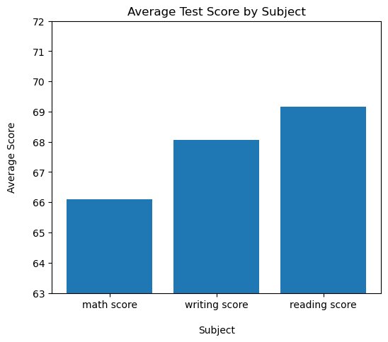
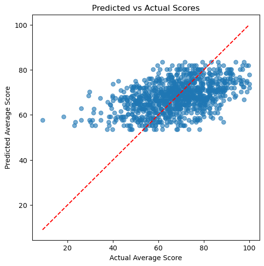
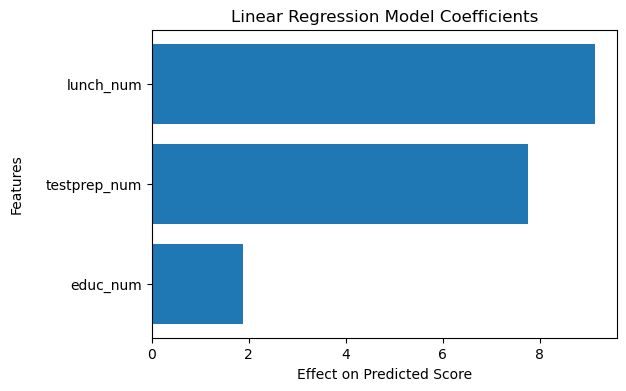
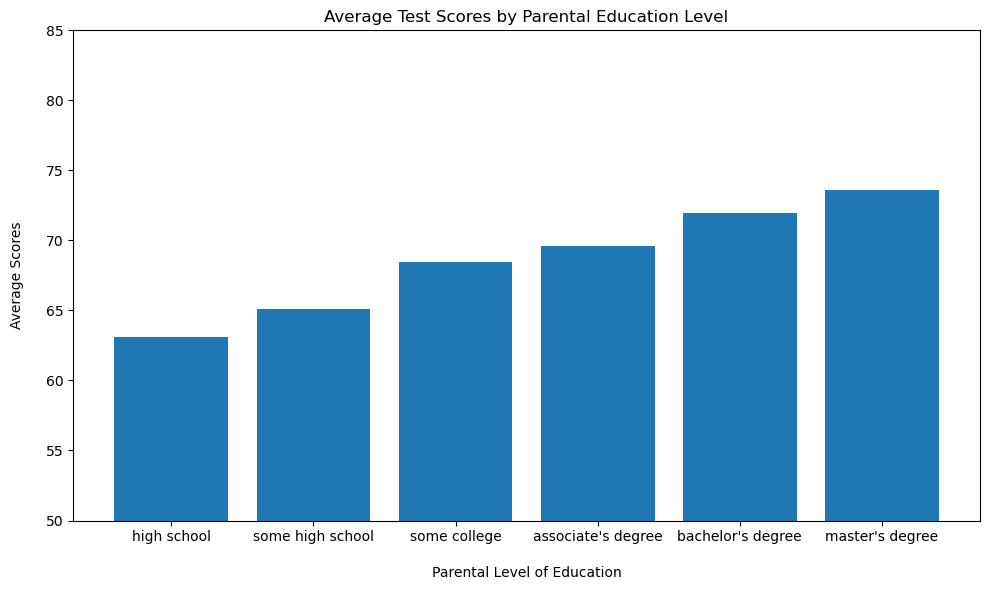
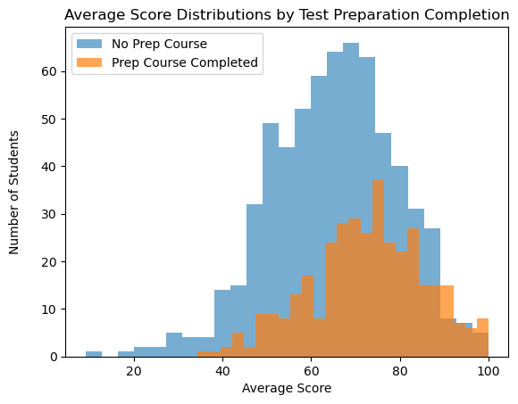

Today we will be looking at a dataset consisting of student test results and other tracked information (gender, race, test preparation, ect). Through exploratory data analysis, I have created a range of visualizations to help us better understand the trends present in the dataset. Our goal will be to search for any factors that are correlated with student test performance in some way, and hopefully we can learn more about school performance through this analysis of the patterns found.
Hypotheses: Hypothesis 1: Test scores are positively correlated with parental education (students whose parents have completed more schooling should perform better). Hypothesis 2: Students who did not complete a test preparation course perform worse on average than those who did. Hypothesis 3: The exam subject is not correlated with test performance.
Lets start by importing the necessary packages and getting a table view of our dataframe so we can see what we’ll be working with.
Code
import numpy as npimport pandas as pdimport matplotlib.pyplot as pltimport seaborn as snsfrom sklearn.model_selection import train_test_splitfrom sklearn.metrics import r2_score, mean_squared_error, accuracy_scoreimport statsmodels.api as sm# import altair as alt# import plotly.express as px# import plotly.io as pio# pio.renderers.default='plotly_mimetype+notebook_connected'# from sklearn.utils import resample# from sklearn.feature_extraction.text import TfidfVectorizer# from sklearn.pipeline import make_pipeline# from sklearn.ensemble import RandomForestClassifier# from sklearn.metrics import ConfusionMatrixDisplay# from wordcloud import WordCloudimport warningswarnings.filterwarnings('ignore')
The dataset contains 8 columns plus an average test score metric that I appended to the dataframe. Additionally, there are 1000 observations recorded so we will be analyzing information on 1000 students.
Here we are doing encoding the columns with non-numerical classes to instead be represented by a integer for their class. This will allow us to do regression analysis on the dataset as you cannot use string values to train regression models.
3 Results
3.1 Subjects Overview
Code
new = melted.groupby('Subject')['Score'].mean()new = new.reset_index()new = new.sort_values("Score")x = new["Subject"]y = new["Score"]plt.figure(figsize=(6, 5))plt.bar(x, y)plt.ylim(63, 72)plt.title("Average Test Score by Subject")plt.ylabel("Average Score\n")plt.xlabel("\nSubject")plt.show()

Here we see that students performed best on reading tests with an average score around 69%. Writing scores followed close behind with the average score being about 68%. Lastly, the math scores were by far the lowest with the average score being 66%. To figure out whether or not this is actually a difference worth noting, we need to look at other factors that may give us more information.
This linear regression model is trained to predict the average test score of a student by looking at their parent’s education, whether or not their lunch is paid for by government assistance, and if they had taken a test preparation course or not. By looking at our model’s performance metrics, we see that the accuracy and R2 is quite low, which suggests our model is not able to predict the student’s scores with any of the provided factors. An R2 of 0.15 means that 15% of the variation in average scores is explained by these factors, and this makes the results fairly useless. It is worth it to note that the p-values were very low for all the features, which means that they are not incorrectly being used to make predictions, but rather that there is too much variance to be captured with just these 3 predictors.
Code
plt.figure(figsize=(6,6))plt.scatter(y, y_pred, alpha=0.6)plt.plot([y.min(), y.max()], [y.min(), y.max()], 'r--')plt.xlabel("Actual Average Score")plt.ylabel("Predicted Average Score")plt.title("Predicted vs Actual Average Test Scores")plt.show()

Looking at a graph of the model’s predicted scores versus the actual test scores, you can notice that the predictions are actually following the same trends in the dataset, which suggests the predictors are not completely uncorrelated with the average score of students. Moreso, the model is equally overshooting and underpredicting the average scores so there must be a lot of variance unexplained by the three chosen features. This confirms our suspicions from the metrics above, so we will have to find another way to explore the dataset for patterns. Before we try something new, lets first see why are coefficients differ in the OLS model.
Code
coeffs = pd.DataFrame({"feature": ["educ_num", "lunch_num", "testprep_num", ], "coef": model.params[1:]})coeffs = coeffs.sort_values(by='coef')plt.figure(figsize=(6,4))plt.barh(coeffs["feature"], coeffs["coef"])plt.xlabel("Effect on Predicted Score")plt.ylabel("Features\n")plt.title("Linear Regression Model Coefficients")plt.show()

It makes sense that education would have the lowest coefficient since its values range from 0-4. The other 2 features are all boolean variables, so we can easily interpret the results as the coefficients are amount of impact on the final prediction if the student has a value of 1 for that feature. So if a student is not on any subsidized lunch program and had taken the test prep course, then we would expect their average test score to be about 16 points higher than someone who is recieving free lunches and did not prepare for the tests.
3.3 Parental Education Analysis
Code
educ = melted.groupby('parental level of education')['average score'].mean()educ = educ.reset_index()educ = educ.sort_values("average score")x = educ["parental level of education"]y = educ["average score"]plt.figure(figsize=(10, 6))plt.bar(x, y)plt.title("Average Test Scores by Parental Education Level")plt.ylabel("Average Scores\n")plt.xlabel("\nParental Level of Education")plt.ylim(50, 85)plt.tight_layout()plt.show()

While these results almost look exactly how we would expect, it is important to note that the students in this dataset performed slightly worse if their parents completed all of high school versus students whos parents only completed some of high school. This could be a result of outliers in the dataset skewing aggregates taken from a small sample size, but I do think it is possible that this is an actual trend that could be rediscovered in a much larger dataset. Parents who dropped out of high school may have done so to persue a high paying job, alternatively it could be because people with no high school degree are more likely to be on government assistance or recieve some other sort of benefit that the income bracket above them does not.
To learn more about the validatiy of these results, lets next look at a more detailed breakdown of the average scores grouped by parental education levels. For this, we will look a box and violin plot to see if there is anything abnormal that could be causing our data to not align with our expectations.
Code
plt.figure(figsize=(11, 7))dtareg.boxplot(column='average score', by='educ_num')plt.suptitle('')plt.title('Average Test Scores by Education Level')plt.ylabel('Average Scores')plt.xlabel('Parental Education Level')plt.show()print(educnum)
Here we see that the first two groups, those who only completed some high school or high school, have more variance across average scores compared to the other categories. Also, there are distinctly 6 outliers in the first 3 groups, with the lowest being in the “some high school” class. With this information, we can confidently infer that students whose parents have completed less schooling are less likely to do well on their exams.
Now lets switch to see if the test preperation course had an affect on the students’ average scores.
3.4 Test Preparation Course Effectiveness
Code
plt.hist(dtareg[dtareg['testprep_num']==0]['average score'], bins=25, alpha=0.6, label='No Prep Course')plt.hist(dtareg[dtareg['testprep_num']==1]['average score'], bins=25, alpha=0.7, label='Prep Course Completed')plt.xlabel('Average Score')plt.ylabel('Number of Students\n')plt.title('Average Score Distributions by Test Preparation Completion')plt.legend()plt.show()

It can be hard to compare the two groups here as there are much less students who completed the test prep as opposed to those who didn’t. However, if you look closely at the scores greater than 80%, you will notice that it is the only time where there are more students who did the test prep appear at a higher frequency than the students who didn’t. This means that the test preparation course definitely helps students with achieving a higher score on their exam. Moreover, there are barely any students at or below the 40% mark in the prepared group, so that also tells us that the prep course raises the floor for a “bad score” on an exam. In all, the students who did not complete the course were much more likely to get a score ranging anywhere from 85%-40%, while the students who did the test prep course were able to get higher scores more consistantly.
4 Discussion
These visualizations and analyses help paint a clear picture of the dataset and the underlying trends. Although there may not be much to go off of, there were still many interesting details to look at throughout the exploratory analysis process. Through the visualizations done for this project, it is safe to conclude that there is a link between test scores and the given factors (parental education, test preparation course, lunch subsidy, ect.). It can be hard to accurately predict a student’s test score as there are many factors that go into a student’s performance than just their parent’s education or whether or not they can afford lunch on their own, but clearly these metrics hint towards a general trend in students who are economically disadvantaged. Parental education, lunch subsidies, and test preparation courses are all factors of a familiy’s wealth and thus it makes sense why the students from less fortunate backgrounds performed worse on exams. Any national dataset would confirm this as the best school districts are those with the wealthiest residents, and unfortunately through the research conducted in this project, I can confirm that this is true to a certain degree.
However, the inconsistancy of the results underline another point. Students who are disadvantaged can still keep up, and even outperform their luckier counterparts. This makes sense as education is not as simple as the wealthy students pass and succeed, while the poorer students fail out. Of course, there will always be variance in how students perform no matter their background. That is why I hope to conduct research on this topic again someday, but with a much larger and descriptive dataset.